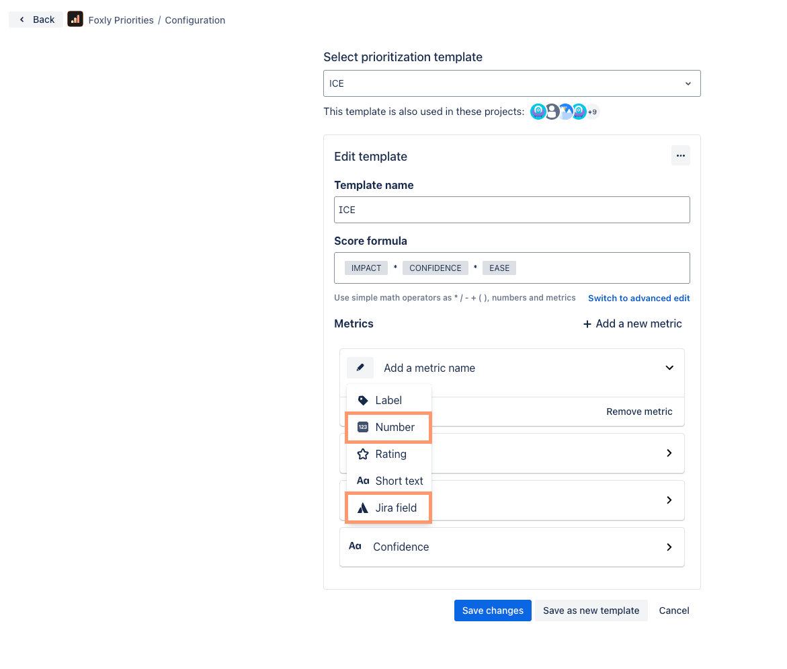
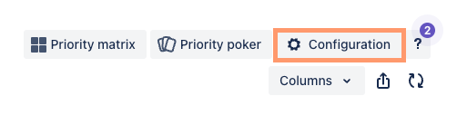
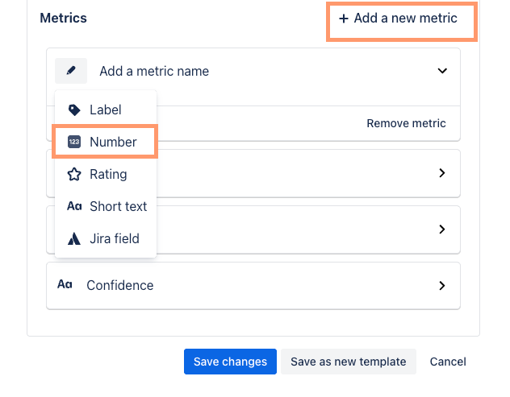
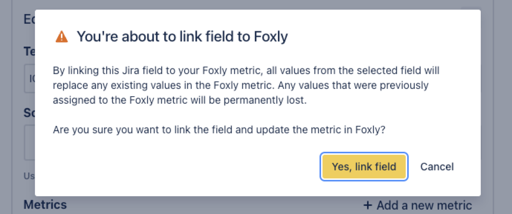
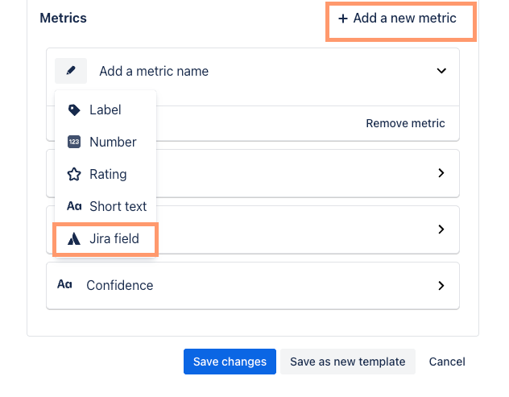
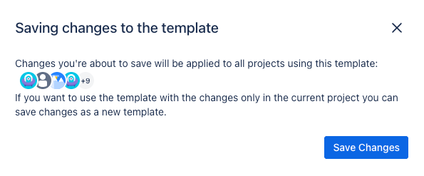

Connect custom fields to Foxly
You can connect numeric fields (such as Story Points, Task Progress, etc.) and single-select custom fields to Foxly metrics to use them in calculating the Priority Score.

Connect numeric fields to Foxly
This feature is great for synchronizing metrics such as Story Points across Jira and Foxly.
To create a Foxly metric <> Jira field connection, click Configuration.

Click +Add new metric.
A drop-down should appear under the [edit pencil icon], but if it doesn’t, click [edit pencil icon] and select Number.

Enter a name for the metric.
Select which number-based metric you want to link to Jira. A confirmation box will appear.
Click Yes, link field.

Click Save changes.
Once this connection is made, you can update the linked field in either Foxly or Jira. It will seamlessly sync to the other one, eliminating the need for complicated automation!
Connect single-select custom fields to Foxly
Connect Jira custom fields to Foxly metrics and use them in calculating the Priority Score.
To create a Foxly metric <> Jira custom field connection, click Configuration.
Click +Add new metric.
A drop-down should appear under the [edit pencil icon], but if it doesn’t, click [edit pencil icon] and select Jira field.

Enter a name for the metric.
Select which Jira custom fields you want to use. Only single-select dropdown fields are available.
When ready, click Save changes.
A confirmation box will appear.

To confirm, click Save Changes.